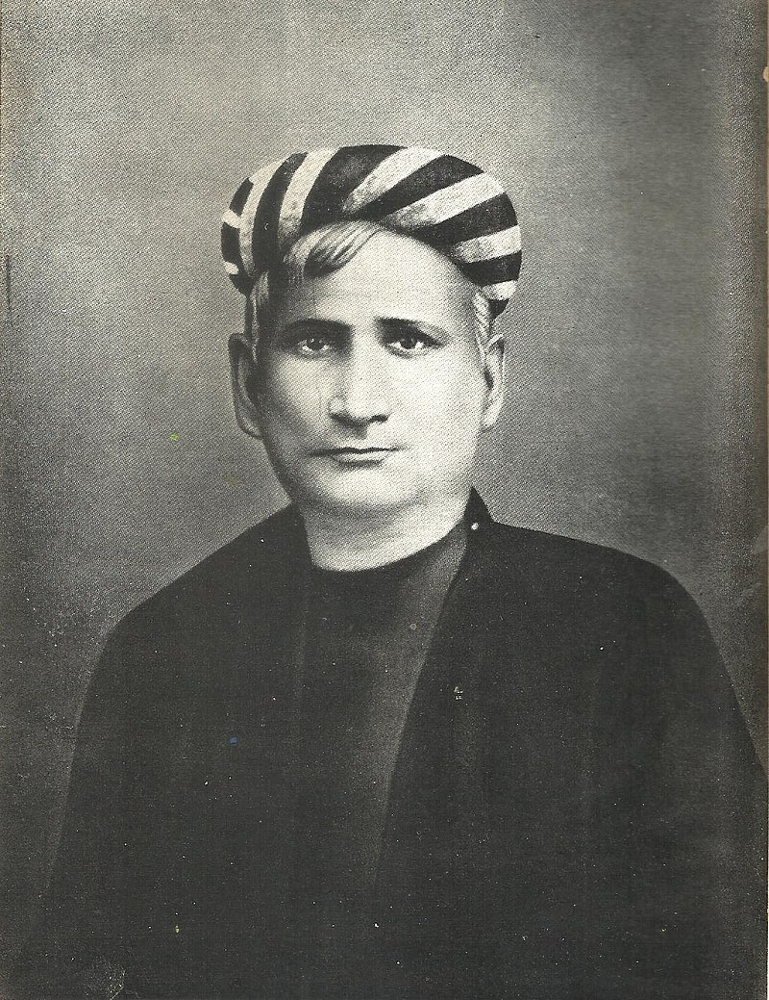
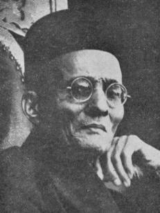
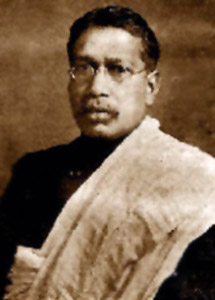
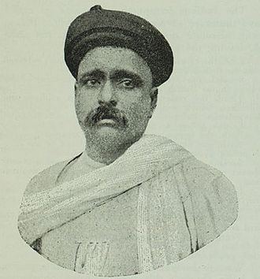
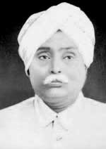
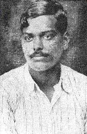
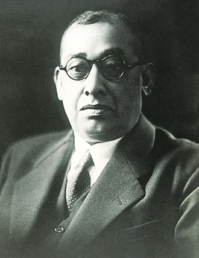

* Major Revolutionaries of India :-
Bankim Chandra Chatterjee

Bankim Chandra Chatterjee or Bankim Chandra Chattopadhyay, CIE (27
June 1838[1] – 8 April 1894[2]) was an Indian novelist, poet and
journalist.[3] He was the composer of Vande Mataram, originally in
Sanskrit, personifying India as a mother goddess and inspiring
activists during the Indian Independence Movement. Chattopadhyay wrote
fourteen novels and many serious, serio-comic, satirical, scientific
and critical treatises in Bengali. He is known as Sahitya Samrat
(Emperor of Literature) in Bengali.
Chattopadhyay is
widely regarded as a key figure in literary renaissance of Bengal as
well as the broader Indian subcontinent. Some of his writings,
including novels, essays, and commentaries, were a breakaway from
traditional verse-oriented Indian writings, and provided an
inspiration for authors across India.
Chattopadhyay was
born in the village of Kanthalpara in the town of North 24 Parganas,
Naihati, in an orthodox Bengali Brahmin family, the youngest of three
brothers, to Yadav Chandra Chattopadhyaya and Durgadebi. His ancestors
hailed from Deshmukho village in Hooghly District.[4] His father, a
government official, went on to become the Deputy Collector of
Midnapur. One of his brothers, Sanjib Chandra Chattopadhyay was also a
novelist and is known for his book "Palamau". Bankim Chandra and his
elder brother both went to Hooghly Collegiate School (then
Governmental Zilla School), where he wrote his first poem. He was
educated at the Hooghly Mohsin College and later at Presidency
College, Kolkata, graduating with a degree in Arts in 1858. He later
attended the University of Calcutta and was one of two candidates who
passed the final exam to become the school's first graduates.[5] He
later obtained a degree in Law in 1869. Following his father's
footsteps, Bankimchandra joined the Subordinate Executive Service. In
1858, he was appointed a Deputy Magistrate (the same type of position
held by his father) of Jessore. After merging of the services in 1863,
he went on to become Deputy Magistrate & Deputy Collector, retiring
from government service in 1891. His years at work were replete with
incidents that brought him into conflict with the colonial government.
He was, however, made a Companion of the Most Eminent Order of the
Indian Empire (CMEOIE) in 1894.[6] He also received the title of Rai
Bahadur in 1891.
This section needs
additional citations for verification. Please help improve this
article by adding citations to reliable sources. Unsourced material
may be challenged and removed. (April 2017) (Learn how and when to
remove this template message) Chattopadhyay's earliest publications
were in Ishwar Chandra Gupta's weekly newspaper Sangbad Prabhakar.[7]
He began his literary career as a writer of verse before turning to
fiction. His first attempt was a novel in Bengali submitted for a
declared prize. He did not win and the novelette was never published.
His first fiction to appear in print was the English novel Rajmohan's
Wife.[8] Durgeshnandini, his first Bengali romance and the first ever
novel in Bengali, was published in 1865.
One of the many
novels of Chattopadhyay that are entitled to be termed as historical
fiction is Rajsimha (1881, rewritten and enlarged 1893). Anandamath
(The Abbey of Bliss, 1882) is a political novel which depicts a
Sannyasi (Hindu ascetic) army fighting a British force. The book calls
for the rise of Indian nationalism. The novel was also the source of
the song Vande Mataram (I worship my Motherland for she truly is my
mother) which, set to music by Rabindranath Tagore, was taken up by
many Indian nationalists, and is now the National Song of India. The
plot of the novel is loosely set on the Sannyasi Rebellion. He
imagined untrained Sannyasi soldiers fighting and defeated the highly
experienced British Army; ultimately, however, he accepted that the
British could not be defeated.[10] The novel first appeared in serial
form in Bangadarshan, the literary magazine that Chattopadhyay founded
in 1872. Vande Mataram became prominent during the Swadeshi movement,
which was sparked by Lord Curzon's attempt to partition Bengal into a
Hindu majority West and Muslim majority East. Drawing from the Shakti
tradition of Bengali Hindus, Chattopadhyay personified India as a
Mother Goddess known as Bharat Mata, which gave the song a Hindu
undertone.
Bankim was
particularly impressed by the historical Gaudiya Vaishnava cultural
efflorescence of the 14th and 15th centuries in Bengal.
Chattopadhyay's commentary on the Bhagavad Gita was published eight
years after his death and contained his comments up to the 19th Verse
of Chapter 4.[12] In a long essay on Sankhya philosophy, he argues
that the central philosophical foundation of the overwhelming part of
religious beliefs in India, including even Buddhism, lies in the
philosophy of Sankhya. He was a critique of the philosophy in the
sense of its emphasis on personal vairagya (renunciation) rather than
political and social power.
Bankim was highly
educated and influenced by Oriental thoughts and ideas. Ramakrishna in
contrast, did not have a formal education. Yet they had a nice
relation between them. Once Sri Ramakrishna Paramahansa, playing on
the meaning of Bankim (Bent A Little), asked him what it was that had
bent him. Bankim Chandra jokingly replied that it was the kick from
the Englishman's shoe for he was a well-known critic of the British
government.
Tagore penned in the memory of his mentor:
"Bankim Chandra had
equal strength in both his hands, he was a true sabyasachi
(ambidextrous). With one hand, he created literary works of
excellence; and with the other, he guided young and aspiring authors.
With one hand, he ignited the light of literary enlightenment ; and
with the other, he blew away the smoke and ash of ignorance and ill
conceived notions”
Sri Aurobindo wrote in his memory:
"The earlier
Bankim was only a poet and stylist, the later Bankim was a seer and
nation-builder"
After the Vishabriksha (The Poison Tree) was published in 1873, the
magazine, Punch wrote: "You ought to read the Poison Tree of Bankim
Chandra Chatterjee."
Vinayak Damodar Savarkar

Vinayak Damodar "Veer" Savarkar (About this soundpronunciation
(help·info); 28 May 1883 – 26 February 1966) was an Indian politician,
activist, and writer. He developed the Hindu nationalist political
ideology of Hindutva while imprisoned at Ratnagiri in 1922. He was a
leading figure in the Indian independence movement[citation needed]
and the Hindu Mahasabha.
Savarkar joined
the Hindu Mahasabha and popularized the term Hindutva (Hinduness),
previously coined by Chandranath Basu,to create a collective "Hindu"
identity as an essence of Bharat (India). Savarkar was an atheist and
also a pragmatic practitioner of Hindu philosophy.
Savarkar began
his political activities as a high school student and continued to do
so at Fergusson College in Pune.[9] He and his brother founded a
secret society called Abhinav Bharat Society. When he went to the
United Kingdom for his law studies, he involved himself with
organizations such as India House and the Free India Society. He also
published books advocating complete Indian independence by
revolutionary means.[10] One of the books he published called The
Indian War of Independence about the Indian Rebellion of 1857 was
banned by the British colonial authorities. In 1910, Savarkar was
arrested and ordered to be extradited to India for his connections
with the revolutionary group India House.
On the voyage
back to India, Savarkar staged an attempt to escape and seek asylum in
France while the ship was docked in the port of Marseilles. The French
port officials however handed him back to the British government in
contravention of international law. On return to India, Savarkar was
sentenced to two life terms of imprisonment totaling fifty years and
was moved to the Cellular Jail in the Andaman and Nicobar Islands.
After 1937, he
started traveling widely, becoming a forceful orator and writer,
advocating Hindu political and social unity. Serving as the president
of the Hindu Mahasabha, Savarkar endorsed the idea of India as a Hindu
Rashtra (Hindu Nation). He started his militarisation of Hindus from
then in order to liberate the country and protect the country and
Hindus in the future. Savarkar was critical of the decision taken by
the Congress working committee in its Wardha session of 1942, passed a
resolution which said to the British colonial government: "Quit India
but keep your armies here" which was the reinstallation of the British
military presence in India, which he felt would be much worse. In July
1942, as he felt extremely stressed carrying out his duties as the
president of Hindu Mahasabha, and as he needed some rest, he resigned
from the post, the timing of which coincided with Gandhi's Quit India
Movement.
In
1948, Savarkar was charged as a co-conspirator in the assassination of
Mahatma Gandhi; however, he was acquitted by the court for lack of
evidence. Savarkar resurfaced in the popular discourse after the
coming of the Bharatiya Janata Party (BJP) into power in 1998 and
again in 2014 with the Modi-led BJP government at the center.
Bipin Chandra Pal

Bipin Chandra Pal (Bengali: বিপিন চন্দ্র পাল About this
soundpronunciation (help·info); 7 November 1858 – 20 May 1932) was an
Indian nationalist, writer, orator, social reformer and Indian
independence movement freedom fighter. He was one third of the “Lal
Bal Pal” triumvirate.[1] Pal was one of the main architects of the
Swadeshi movement along with Sri Aurobindo. He also opposed the
partition of Bengal by the British colonial government.
Bipin Chandra
Pal was born in the village of Poil, Habiganj, Sylhet District, Bengal
Presidency of British India, in a Hindu Bengali Kayastha family.[2]
His father was Ramchandra Pal, a Persian scholar, and small landowner.
He studied and taught at the Church Mission Society College (now the
St. Paul's Cathedral Mission College), an affiliated college of the
University of Calcutta.[3] His son was Niranjan Pal, one of the
founders of Bombay Talkies. His son-in-law was the ICS officer, S. K.
Dey, who later became a union minister. His another son-in-law was
freedom fighter Ullaskar Dutta who married Lila Dutta his childhood
love interest after many circumstances at their last age.
As
revolutionary as he was in politics, Pal was the same in his private
life as well. After his first wife died, he married a widow and joined
the Brahmo Samaj.
Pal featured on a 1958 Indian stamp.
Pal is known as
the Father of Revolutionary Thoughts in India and was one of the
freedom fighters of India. Pal became a major leader of the Indian
National Congress. At the Madras session of Indian National Congress
held in 1887, Bipin Chandra Pal made a strong plea for repeal of the
Arms Act which was discriminatory in nature. Along with Lala Lajpat
Rai and Bal Gangadhar Tilak he belonged to the Lal-Bal-Pal trio that
was associated with revolutionary activity. Sri Aurobindo Ghosh and
Pal were recognised as the chief exponents of a new national movement
revolving around the ideals of Purna Swaraj, Swadeshi, boycott and
national education. His programme consisted of Swadeshi, boycott and
national education. He preached and encouraged the use of Swadeshi and
the boycott of foreign goods to eradicate poverty and unemployment. He
wanted to remove social evils from the form and arouse the feelings of
nationalism through national criticism. He had no faith in mild
protests in the form of non-cooperation with the British colonial
government. On that one issue, the assertive nationalist leader had
nothing common with Mahatma Gandhi. During the last six years of his
life, he parted company with the Congress and led a secluded life. Sri
Aurobindo referred to him as one of mightiest prophets of nationalism.
Bipin Chandra Pal made his efforts to remove social and economic ills.
He opposed caste system and advocated widow remarriage. He advocated
48 hours of work week and demanded for the hike in wages of workers.
He expressed his disdain for Gandhi's ways, which he criticised for
being rooted in “magic” instead of “logic”.
As a
journalist, Pal worked for Bengal Public Opinion, The Tribune and New
India, where he propagated his brand of nationalism.[6] He wrote
several articles warning India of the changes happening in China and
other geopolitical situations. In one of his writings, describing
where the future danger for India will come from, Pal wrote under the
title "Our Real Danger".
Bal Gangadhar Tilak

Bal Gangadhar Tilak (or Lokmanya Tilak, About this soundpronunciation
(help·info); 23 July 1856 – 1 August 1920), born as Keshav Gangadhar
Tilak, was an Indian nationalist, teacher, and an independence
activist. He was one third of the Lal Bal Pal triumvirate. Tilak was
the first leader of the Indian independence movement. The British
colonial authorities called him "The father of the Indian unrest." He
was also conferred with the title of "Lokmanya", which means "accepted
by the people (as their leader)". Mahatma Gandhi called him "The Maker
of Modern India".
Tilak was one
of the first and strongest advocates of Swaraj ("self-rule") and a
strong radical in Indian consciousness. He is known for his quote in
Marathi: "Swarajya is my birthright and I shall have it!". He formed a
close alliance with many Indian National Congress leaders including
Bipin Chandra Pal, Lala Lajpat Rai, Aurobindo Ghose, V. O. Chidambaram
Pillai and Muhammad Ali Jinnah.
Keshav
Gangadhar Tilak was born on 23 July 1856 in an Marathi Hindu Chitpavan
Brahmin family in Ratnagiri, the headquarters of the Ratnagiri
district of present-day Maharashtra (then Bombay Presidency).[1] His
ancestral village was Chikhali. His father, Gangadhar Tilak was a
school teacher and a Sanskrit scholar who died when Tilak was sixteen.
In 1871, Tilak was married to Tapibai (Née Bal) when he was sixteen, a
few months before his father's death. After marriage, her name was
changed to Satyabhamabai. He obtained his Bachelor of Arts in first
class in Mathematics from Deccan College of Pune in 1877. He left his
M.A. course of study midway to join the L.L.B course instead, and in
1879 he obtained his L.L.B degree from Government Law College.[6]
After graduating, Tilak started teaching mathematics at a private
school in Pune. Later, due to ideological differences with the
colleagues in the new school, he withdrew and became a journalist.
Tilak actively participated in public affairs. He stated: "Religion
and practical life are not different. The real spirit is to make the
country your family instead of working only for your own. The step
beyond is to serve humanity and the next step is to serve God."
Inspired by
Vishnushastri Chiplunkar, he co-founded the New English school for
secondary education in 1880 with a few of his college friends,
including Gopal Ganesh Agarkar, Mahadev Ballal Namjoshi and
Vishnushastri Chiplunkar. Their goal was to improve the quality of
education for India's youth. The success of the school led them to set
up the Deccan Education Society in 1884 to create a new system of
education that taught young Indians nationalist ideas through an
emphasis on Indian culture.[8] The Society established the Fergusson
College in 1885 for post-secondary studies. Tilak taught mathematics
at Fergusson College. In 1890, Tilak left the Deccan Education Society
for more openly political work.[9] He began a mass movement towards
independence by an emphasis on a religious and cultural revival.
Tilak had a
long political career agitating for Indian autonomy from British
colonial rule. Before Gandhi, he was the most widely known Indian
political leader. Unlike his fellow Maharashtrian contemporary,
Gokhale, Tilak was considered a radical Nationalist but a Social
conservative. He was imprisoned on a number of occasions that included
a long stint at Mandalay. At one stage in his political life he was
called "the father of Indian unrest" by British author Sir Valentine
Chirol.
Tilak
joined the Indian National Congress in 1890.[12] He opposed its
moderate attitude, especially towards the fight for self-government.
He was one of the most-eminent radicals at the time.[13] In fact, it
was the Swadeshi movement of 1905–1907 that resulted in the split
within the Indian National Congress into the Moderates and the
Extremists.
During late 1896, a bubonic plague spread from Bombay to Pune, and by
January 1897, it reached epidemic proportions. The British Indian Army
was brought in to deal with the emergency and strict measures were
employed to curb the plague, including the allowance of forced entry
into private houses, the examination of the house's occupants,
evacuation to hospitals and quarantine camps, removing and destroying
personal possessions, and preventing patients from entering or leaving
the city. By the end of May, the epidemic was under control. The
measures used to curb the pandemic caused widespread resentment among
the Indian public. Tilak took up this issue by publishing inflammatory
articles in his paper Kesari (Kesari was written in Marathi, and
"Maratha" was written in English), quoting the Hindu scripture, the
Bhagavad Gita, to say that no blame could be attached to anyone who
killed an oppressor without any thought of reward. Following this, on
22 June 1897, Commissioner Rand and another British officer, Lt.
Ayerst were shot and killed by the Chapekar brothers and their other
associates. According to Barbara and Thomas R. Metcalf, Tilak "almost
surely concealed the identities of the perpetrators".[14] Tilak was
charged with incitement to murder and sentenced to 18 months
imprisonment. When he emerged from prison in present-day Mumbai, he
was revered as a martyr and a national hero. He adopted a new slogan
coined by his associate Kaka Baptista: "Swaraj (self-rule) is my
birthright and I shall have it."
Following the
Partition of Bengal, which was a strategy set out by Lord Curzon to
weaken the nationalist movement, Tilak encouraged the Swadeshi
movement and the Boycott movement.[17] The movement consisted of the
boycott of foreign goods and also the social boycott of any Indian who
used foreign goods. The Swadeshi movement consisted of the usage of
natively produced goods. Once foreign goods were boycotted, there was
a gap which had to be filled by the production of those goods in India
itself. Tilak said that the Swadeshi and Boycott movements are two
sides of the same coin.
Lala Lajpat Rai
of Punjab, Bal Gangadhar Tilak (middle) of Maharashtra, and Bipin
Chandra Pal of Bengal, the triumvirate were popularly known as Lal Bal
Pal, changed the political discourse of the Indian independence
movement. Tilak opposed the moderate views of Gopal Krishna Gokhale,
and was supported by fellow Indian nationalists Bipin Chandra Pal in
Bengal and Lala Lajpat Rai in Punjab. They were referred to as the
"Lal-Bal-Pal triumvirate". In 1907, the annual session of the Congress
Party was held at Surat, Gujarat. Trouble broke out over the selection
of the new president of the Congress between the moderate and the
radical sections of the party. The party split into the radicals
faction, led by Tilak, Pal and Lajpat Rai, and the moderate faction.
Nationalists like Aurobindo Ghose, V. O. Chidambaram Pillai were Tilak
supporters.
When asked in
Calcutta whether he envisioned a Maratha-type of government for
independent India, Tilak answered that the Maratha-dominated
governments of 17th and 18th centuries were outmoded in the 20th
century, and he wanted a genuine federal system for Free India where
everyone was an equal partner.[20] He added that only such a form of
government would be able to safeguard India's freedom. He was the
first Congress leader to suggest that Hindi written in the Devanagari
script be accepted as the sole national language of India.
During his
lifetime among other political cases, Tilak had been tried for
sedition charges in three times by British India Government—in
1897,[22] 1909,[23] and 1916.[24] In 1897, Tilak was sentenced to 18
months in prison for preaching disaffection against the Raj. In 1909,
he was again charged with sedition and intensifying racial animosity
between Indians and the British. The Bombay lawyer Muhammad Ali Jinnah
appeared in Tilak's defence but he was sentenced to six years in
prison in Burma in a controversial judgement.[25] In 1916 when for the
third time Tilak was charged for sedition over his lectures on
self-rule, Jinnah again was his lawyer and this time led him to
acquittal in the case.
On 30 April
1908, two Bengali youths, Prafulla Chaki and Khudiram Bose, threw a
bomb on a carriage at Muzzafarpur, to kill the Chief Presidency
Magistrate Douglas Kingsford of Calcutta fame, but erroneously killed
two women traveling in it. While Chaki committed suicide when caught,
Bose was hanged. Tilak, in his paper Kesari, defended the
revolutionaries and called for immediate Swaraj or self-rule. The
Government swiftly charged him with sedition. At the conclusion of the
trial, a special jury convicted him by 7:2 majority. The judge,
Dinshaw D. Davar gave him a six years jail sentence to be served in
Mandalay, Burma and a fine of ₹1,000 (US$14). On being asked by the
judge whether he had anything to say, Tilak said:
All that I wish
to say is that, in spite of the verdict of the jury, I still maintain
that I am innocent. There are higher powers that rule the destinies of
men and nations; and I think, it may be the will of Providence that
the cause I represent may be benefited more by my suffering than by my
pen and tongue.
Muhammad Ali Jinnah was his lawyer in the case.[27] Justice Davar's
judgement came under stern criticism in press and was seen against
impartiality of British justice system. Justice Davar himself
previously had appeared for Tilak in his first sedition case in
1897.[25] In passing sentence, the judge indulged in some scathing
strictures against Tilak's conduct. He threw off the judicial
restraint which, to some extent, was observable in his charge to the
jury. He condemned the articles as "seething with sedition", as
preaching violence, speaking of murders with approval. "You hail the
advent of the bomb in India as if something had come to India for its
good. I say, such journalism is a curse to the country". Tilak was
sent to Mandalay from 1908 to 1914.[29] While imprisoned, he continued
to read and write, further developing his ideas on the Indian
nationalist movement. While in the prison he wrote the Gita
Rahasya.[30] Many copies of which were sold, and the money was donated
for the Indian Independence movement.
This article
needs additional citations for verification. Please help improve this
article by adding citations to reliable sources. Unsourced material
may be challenged and removed.
Find sources:
"Bal Gangadhar Tilak" – news · newspapers · books · scholar · JSTOR
(August 2019) (Learn how and when to remove this template message)
Tilak developed
diabetes during his sentence in Mandalay prison. This and the general
ordeal of prison life had mellowed him at his release on 16 June 1914.
When World War I started in August of that year, Tilak cabled the
King-Emperor George V of his support and turned his oratory to find
new recruits for war efforts. He welcomed The Indian Councils Act,
popularly known as Minto-Morley Reforms, which had been passed by
British Parliament in May 1909, terming it as "a marked increase of
confidence between the Rulers and the Ruled". It was his conviction
that acts of violence actually diminished, rather than hastening, the
pace of political reforms. He was eager for reconciliation with
Congress and had abandoned his demand for direct action and settled
for agitations "strictly by constitutional means" – a line that had
long been advocated by his rival Gokhale.[32][additional citation(s)
needed] Tilak reunited with his fellow nationalists and rejoined the
Indian National Congress during the Lucknow pact 1916.
Tilak tried to
convince Mohandas Gandhi to leave the idea of Total non-violence
("Total Ahimsa") and try to get self-rule ("Swarajya") by all
means.[citation needed] Though Gandhi did not entirely concur with
Tilak on the means to achieve self-rule and was steadfast in his
advocacy of satyagraha, he appreciated Tilak's services to the country
and his courage of conviction. After Tilak lost a civil suit against
Valentine Chirol and incurred pecuniary loss, Gandhi even called upon
Indians to contribute to the Tilak Purse Fund started with the
objective of defraying the expenses incurred by Tilak.
Main article: All India Home Rule League
Tilak helped
found the All India Home Rule League in 1916–18, with G. S. Khaparde
and Annie Besant. After years of trying to reunite the moderate and
radical factions, he gave up and focused on the Home Rule League,
which sought self-rule. Tilak travelled from village to village for
support from farmers and locals to join the movement towards
self-rule.[29] Tilak was impressed by the Russian Revolution, and
expressed his admiration for Vladimir Lenin.[35] The league had 1400
members in April 1916, and by 1917 membership had grown to
approximately 32,000. Tilak started his Home Rule League in
Maharashtra, Central Provinces, and Karnataka and Berar region.
Besant's League was active in the rest part of India.
Tilak sought to
unite the Indian population for mass political action throughout his
life. For this to happen, he believed there needed to be a
comprehensive justification for anti-British pro-Hindu activism. For
this end, he sought justification in the supposed original principles
of the Ramayana and the Bhagavad Gita. He named this call to activism
karma-yoga or the yoga of action.[37] In his interpretation, the
Bhagavad Gita reveals this principle in the conversation between
Krishna and Arjuna when Krishna exhorts Arjuna to fight his enemies
(which in this case included many members of his family) because it is
his duty. In Tilaks opinion, the Bhagavad Gita provided a strong
justification of activism. However, this conflicted with the
mainstream exegesis of the text at the time which was predominated by
renunciate views and the idea of acts purely for God. This was
represented by the two mainstream views at the time by Ramanuja and
Adi Shankara. To find support for this philosophy, Tilak wrote his own
interpretations of the relevant passages of the Gita and backed his
views using Jnanadeva's commentary on the Gita, Ramanuja's critical
commentary and his own translation of the Gita.[38] His main battle
was against the renunciate views of the time which conflicted with
worldly activism. To fight this, he went to extents to reinterpret
words such as karma, dharma, yoga as well as the concept of
renunciation itself. Because he found his rationalization on Hindu
religious symbols and lines, he alienated many non-Hindus such as the
Muslims who began to ally with the British for support.[citation
needed]
Tilak
was strongly opposed to liberal trends emerging in Pune such as
women's rights and social reforms against untouchability.Tilak
vehemently opposed the establishment of the first Native girls High
school (now called Huzurpaga) in Pune in 1885 and its curriculum using
his newspapers, the Mahratta and Kesari. Tilak was also opposed to
intercaste marriage, particularly the match where an upper caste woman
married a lower caste man.[43] In the case of Deshasthas, Chitpawans
and Karhades, he encouraged these three Maharashtrian Brahmin groups
to give up "caste exclusiveness" and intermarry.[a] Tilak officially
opposed the age of consent bill which raised the age of marriage from
ten to twelve for girls, however he was willing to sign a circular
that increased age of marriage for girls to sixteen and twenty for
boys. He fully supported social reforms but in his opinion self-rule
took precedence over any social reform.[45][46] On the whole Tilak was
not against social reforms. Though he was against the age of consent
bill, he arranged his daughter's marriage at the age of fifteen. He
also advocated widow marriages. He also congratulated Dhondo Keshav
Karve when he married a widow after the death of their first wife. He
was in the favour of social reforms but without the interference of
British Government.
Child bride
Rukhmabai was married at the age of eleven but refused to go and live
with her husband. The husband sued for restitution of conjugal rights,
initially lost but appealed the decision. On 4 March 1887, Justice
Farran, using interpretations of Hindu laws, ordered Rukhmabai to "go
live with her husband or face six months of imprisonment". Tilak
approved of this decision of the court and said that the court was
following Hindu Dharmaśāstras. Rukhmabai responded that she would
rather face imprisonment than obey the verdict. Her marriage was later
dissolved by Queen Victoria. Later, she went on to receive her Doctor
of Medicine degree from the London School of Medicine for Women.
In 1890, when
an eleven-year-old Phulamani Bai died while having sexual intercourse
with her much older husband, the Parsi social reformer Behramji
Malabari supported the Age of Consent Act, 1891 to raise the age of a
girl's eligibility for marriage. Tilak opposed the Bill and said that
the Parsis as well as the English had no jurisdiction over the (Hindu)
religious matters. He blamed the girl for having "defective female
organs" and questioned how the husband could be "persecuted
diabolically for doing a harmless act". He called the girl one of
those "dangerous freaks of nature".[41] Tilak did not have a
progressive view when it came to gender relations. He did not believe
that Hindu women should get a modern education. Rather, he had a more
conservative view, believing that women were meant to be homemakers
who had to subordinate themselves to the needs of their husbands and
children. Tilak refused to sign a petition for the abolition of
untouchability in 1918, two years before his death, although he had
spoken against it earlier in a meeting.
Tilak and Swami
Vivekananda had great mutual respect and esteem for each other. They
met accidentally while travelling by train in 1892 and Tilak had
Vivekananda as a guest in his house. A person who was present
there(Basukaka), heard that it was agreed between Vivekananda and
Tilak that Tilak would work towards nationalism in the "political"
arena, while Vivekananda would work for nationalism in the "religious"
arena. When Vivekananda died at a young age, Tilak expressed great
sorrow and paid tributes to him in the Kesari.
"No Hindu, who,
has the interests of Hinduism at his heart, could help feeling grieved
over Vivekananda's samadhi. Vivekananda, in short, had taken the work
of keeping the banner of Advaita philosophy forever flying among all
the nations of the world and made them realize the true greatness of
Hindu religion and of the Hindu people. He had hoped that he would
crown his achievement with the fulfillment of this task by virtue of
his learning, eloquence, enthusiasm and sincerity, just as he had laid
a secure foundation for it; but with Swami's samadhi, these hopes have
gone. Thousands of years ago, another saint, Shankaracharya, who,
showed to the world the glory and greatness of Hinduism. At the fag of
the 19th century, the second Shankaracharya is Vivekananda, who,
showed to the world the glory of Hinduism. His work has yet to be
completed. We have lost our glory, our independence, everything."
Shahu, the
ruler of the princely state of Kolhapur, had several conflicts with
Tilak as the latter agreed with the Brahmins decision of Puranic
rituals for the Marathas that were intended for Shudras. Tilak even
suggested that the Marathas should be "content" with the Shudra status
assigned to them by the Brahmins. Tilak's newspapers, as well as the
press in Kolhapur, criticized Shahu for his caste prejudice and his
unreasoned hostility towards Brahmins. These included serious
allegations such as sexual assaults by Shahu against four Brahmin
women. An English woman named Lady Minto was petitioned to help them.
The agent of Shahu had blamed these allegations on the "troublesome
brahmins". Tilak and another Brahmin suffered from the confiscation of
estates by Shahu, the first during a quarrel between Shahu and the
Shankaracharya of Sankareshwar and later in another issue.
Tilak started
two weeklies, Kesari ("The Lion") in Marathi and Mahratta in English
(sometimes referred as 'Maratha' in Academic Study Books) in 1880–1881
with Gopal Ganesh Agarkar as the first editor.[58] By this he was
recognized as 'awakener of India', as Kesari later became a daily and
continues publication to this day.[citation needed] In 1894, Tilak
transformed the household worshipping of Ganesha into a grand public
event (Sarvajanik Ganeshotsav). The celebrations consisted of several
days of processions, music, and food. They were organized by the means
of subscriptions by neighbourhood, caste, or occupation. Students
often would celebrate Hindu and national glory and address political
issues; including patronage of Swadeshi goods.[59] In 1895, Tilak
founded the Shri Shivaji Fund Committee for the celebration of "Shiv
Jayanti", the birth anniversary of Shivaji, the founder of the Maratha
Empire. The project also had the objective of funding the
reconstruction of the tomb (Samadhi) of Shivaji at Raigad Fort. For
this second objective, Tilak established the Shri Shivaji Raigad
Smarak Mandal along with Senapati Khanderao Dabhade II of Talegaon
Dabhade, who became the founder President of the Mandal.[citation
needed]
The
events like the Ganapati festival and Shiv Jayanti were used by Tilak
to build a national spirit beyond the circle of the educated elite in
opposition to colonial rule. But it also exacerbated Hindu-Muslim
differences. The festival organizers would urge Hindus to protect cows
and boycott the Muharram celebrations organized by Shi'a Muslims, in
which Hindus had formerly often participated. Thus, although the
celebrations were meant to be a way to oppose colonial rule, they also
contributed to religious tensions.[59] Contemporary Marathi Hindu
nationalist parties like the Shiv Sena took up his reverence for
Shivaji.[60] However, Indian Historian, Uma Chakravarti cites
Professor Gordon Johnson and states "It is significant that even at
the time when Tilak was making political use of Shivaji the question
of conceding Kshatriya status to him as Maratha was resisted by the
conservative Brahmins including Tilak. While Shivaji was a Brave man,
all his bravery, it was argued, did not give him the right to a status
that very nearly approached that of a Brahmin. Further, the fact that
Shivaji worshiped the Brahmanas in no way altered social relations,
'since it was as a Shudra he did it – as a Shudra the servant, if not
the slave, of the Brahmin'".
The Deccan
Education Society that Tilak founded with others in the 1880s still
runs Institutions in Pune like the Fergusson College.[citation needed]
The Swadeshi movement started by Tilak at the beginning of the 20th
century became part of the Independence movement until that goal was
achieved in 1947. One can even say Swadeshi remained part of Indian
Government policy until the 1990s when the Congress Government
liberalised the economy.[62][better source needed] Tilak said, "I
regard India as my Motherland and my Goddess, the people in India are
my kith and kin, and loyal and steadfast work for their political and
social emancipation is my highest religion and duty".
In 1903, Tilak
wrote the book "The Arctic Home in the Vedas". In it, he argued that
the Vedas could only have been composed in the Arctics, and the Aryan
bards brought them south after the onset of the last ice age. He
proposed a new way to determine the exact time of the Vedas.[citation
needed] In "The Orion", he tried to calculate the time of the Vedas by
using the position of different Nakshatras.[64] The positions of the
Nakshtras were described in different Vedas. Tilak wrote "Shrimadh
Bhagvad Gita Rahasya" in prison at Mandalay – the analysis of 'Karma
Yoga' in the Bhagavad Gita, which is known to be a gift of the Vedas
and the Upanishads.[citation needed]
Tilak's son,
Shridhar campaigned for removal of untouchability in late 1920s with
dalit leader, Dr. Ambedkar. Both were leaders of the multi-caste
Samata sangh.[66][67] Shridhar's son, Jayantrao Tilak (1921–2001) was
editor of the Kesari newspaper for many years. Jayantrao was also a
politician from the Congress party. He was a member of the Parliament
of India representing Maharashtra in the Rajya Sabha, the upper house
of the Indian Parliament. He was also a member of the Maharashtra
Legislative Council.
Rohit Tilak, a
descendant of Bal Gangadhar Tilak, is a Pune-based Congress party
politician.[69] In 2017, a woman with whom he had an extra-marital
affair accused him of rape and other crimes. He is currently out on
bail in connection with these charges.
On 28 July
1956, a portrait of B. G. Tilak is put in the Central Hall of
Parliament House. The portrait of Tilak, painted by Gopal Deuskar, was
unveiled by the then Prime Minister of India, Jawaharlal Nehru.
Tilak Smarak
Ranga Mandir, a theatre auditorium in Pune is dedicated to him. In
2007, the Government of India released a coin to commemorate the 150th
birth anniversary of Tilak.[74][75] The formal approval of the
government of Burma was received for the construction of
clafs-cum-lecture hall in the Mandalay prison as a memorial to
Lokmanya Tilak. ₹35,000 (US$490) were given by the Indian Government
and ₹7,500 (US$110) by the local Indian community in Burma.
Several Indian
films have been made on his life, including: the documentary films
Lokmanya Bal Gangadhar Tilak (1951) and Lokmanya Tilak (1957) both by
Vishram Bedekar, Lokmanya: Ek Yugpurush (2015) by Om Raut, and The
Great Freedom Fighter Lokmanya Bal Gangadhar Tilak - Swaraj My
Birthright (2018) by Vinay Dhumale.
Lala Lajpat Rai

Lala Lajpat Rai (28 January 1865 — 17 November 1928) was an Indian
independence activist. He played a pivotal role in the Indian
Independence movement. He was popularly known as Punjab Kesari. He was
one of the three Lal Bal Pal triumvirates. He was also associated with
activities of Punjab National Bank and Lakshmi Insurance Company in
their early stages of death in 1894. He died a few weeks after
sustaining severe injuries during a baton charge by police when he led
a peaceful protest march against the all-British Simon Commission, a
commission constituted by the United Kingdom for Indian constitutional
reform.
Rai was
born on 28 January 1865 in an Agrawal Jain family, as a son of Urdu
and Persian government school teacher Munshi Radha Krishan and his
wife Gulab Devi at Dhudike in Ludhiana district of Punjab Province. He
spent much of his youth in Jagraon. His house still stands tall in
Jagraon and houses a library and museum.
In the late
1870s, his father was transferred to Rewari, where he had his initial
education in Government Higher Secondary School, Rewari, Punjab
province, where his father was posted as an Urdu teacher. During his
early life, Rai's liberal views and belief in Hinduism were shaped by
his father and deeply religious mother respectively, which he
successfully applied to create a career of reforming the religion and
Indian policy through politics and journalistic writing. In 1880,
Lajpat Rai joined Government College at Lahore to study law, where he
came in contact with patriots and future freedom fighters, such as
Lala Hans Raj and Pandit Guru Dutt. While studying at Lahore he was
influenced by the Hindu reformist movement of Swami Dayanand
Saraswati, became a member of existing Arya Samaj Lahore (founded
1877) and founder-editor of Lahore-based Arya Gazette. When studying
law, he became a firm believer in the idea that Hinduism, above
nationality, was the pivotal point upon which an Indian lifestyle must
be based. He believed Hinduism led to practices of peace and humanity,
and that when nationalist ideas were added to this peaceful belief
system, a secular nation could be formed. This focus on Hindu
practices in the subcontinent would ultimately lead him to the
continuation of peaceful movements to create successful demonstrations
for Indian independence.[better source needed] Though his increasing
proximity with non-secular organisations such as the Hindu Mahasabha
leaders gathered criticism from the Naujawan Bharat Sabha, Rai was
otherwise venerated by the members of the Naujawan Bharat Sabha.
Lala Lajpat Rai
(left) of Punjab, Bal Gangadhar Tilak of Maharashtra, and Bipin
Chandra Pal of Bengal, the triumvirate were popularly known as Lal Bal
Pal, changed the political discourse of the Indian independence
movement.
In
1884, his father was transferred to Rohtak and Rai came along after
the completion of his studies at Lahore. In 1886, he moved to Hisar
where his father was transferred, and started to practice law and
became a founding member of the Bar council of Hisar along with Babu
Churamani. In the same year he also founded the Hisar district branch
of the Indian National Congress and reformist Arya Samaj with Babu
Churamani (lawyer), three Tayal brothers (Chandu Lal Tayal, Hari Lal
Tayal and Balmokand Tayal), Dr. Ramji Lal Hooda, Dr. Dhani Ram, Arya
Samaj Pandit Murari Lal, Seth Chhaju Ram Jat (founder of Jat School,
Hisar) and Dev Raj Sandhir. In 1888 and again in 1889, he had the
honor of being one of the four delegates from Hisar to attend the
annual session of the Congress at Allahabad, along with Babu
Churamani, Lala Chhabil Das and Seth Gauri Shankar. In 1892, he moved
to Lahore to practice before the Lahore High Court. To shape the
political policy of India to gain independence, he also practiced
journalism and was a regular contributor to several newspapers
including The Tribune. In 1886, he helped Mahatma Hansraj establish
the nationalistic Dayananda Anglo-Vedic School, Lahore
In 1914, he
quit law practice to dedicate himself to the Indian independence
movement and travelled to Britain, and then to the United States in
1917. In October 1917, he founded the Indian Home Rule League of
America in New York. He stayed in the United States from 1917 to 1920.
His early freedom struggle was impacted by Arya Samaj and communal
representation.
After joining the Indian National Congress and taking part in
political agitation in Punjab, Lala Lajpat Rai was deported to
Mandalay, but there was insufficient evidence to hold him for
subversion. Lajpat Rai's supporters attempted to secure his election
to the presidency of the party session at Surat in December 1907, but
he did not succeed.
Graduates of
the National College, which he founded inside the Bradlaugh Hall at
Lahore as an alternative to British-style institutions, included
Bhagat Singh.[15] He was elected President of the Indian National
Congress in the Calcutta Special Session of 1920.[16] In 1921, he
founded Servants of the People Society, a non-profit welfare
organisation, in Lahore, which shifted its base to Delhi after
partition, and has branches in many parts of India. According to him,
Hindu society needs to fight its own battle with caste system,
position of women and untouchability. Vedas were an important part of
Hindu religion but the lower caste were not allowed to read them. Lala
Lajpat Rai approved that the lower caste should be allowed to read
them and recite the mantras. He believed that everyone should be
allowed to read and learn from the Vedas.
A banquet given
in honour of Lala Lajpat Rai by the California Chapter of the
Hindustan Association of America at Hotel Shattuck in Berkeley on 12
February 1916.
Lajpat Rai travelled to the United States in 1917, and then returned
during World War I. He toured Sikh communities along the Western
Seaboard, visited the Tuskegee University in Alabama, and met with
workers in the Philippines. His travelogue, The United States of
America (1916), details these travels and features extensive
quotations from leading African American intellectuals, including
W.E.B. Du Bois and Fredrick Douglass. While in the United States he
had founded the Indian Home Rule League in New York City and a monthly
journal, the Young India and Hindustan Information Services
Association. Rai petitioned the United States House Committee on
Foreign Affairs, painting a vivid picture of maladministration by the
British Raj in India, the aspirations of Indian public for
independence amongst many other points which strongly sought the
support of the international community for the attainment of Indian
independence. The 32-page petition, which was prepared overnight, was
discussed in the U.S. Senate in October 1917. The book also argues for
the notion of "color-caste," suggesting sociological similarities
between race in the US and caste in India. During World War I, Lajpat
Rai lived in the United States, but he returned to India in 1919 and
in the following year led the special session of the Congress Party
that launched the non-co-operation movement. He was imprisoned from
1921 to 1923 and elected to the legislative assembly on his release.
Photo of Rai printed in the February 1920 issue of Young India.
In 1928, the
United Kingdom set up the Simon Commission, headed by Sir John Simon
(later, Lord Simon, 1st Viscount Simon) to report on the political
situation in India. The Commission was boycotted by Indian political
parties because it did not include any Indian members, and it was met
with country-wide protests. When the Commission visited Lahore on 30
October 1928, Lajpat Rai led a non-violent march in protest against
it. The protesters chanted "Simon Go Back" and carried black flags.
The police
superintendent in Lahore, James A. Scott, ordered the police to lathi
charge the protesters and personally assaulted Rai. Despite being
severely injured, Rai subsequently addressed the crowd and said "I
declare that the blows struck at me today will be the last nails in
the coffin of British rule in India".
He did not
fully recover from his injuries and died on 17 November 1928. Doctors
thought that Scott's blows had hastened his death. However, when the
matter was raised in the British Parliament, the British government
denied any role in Rai's death. Bhagat Singh, an HSRA revolutionary
who was a witness to the event, swore to avenge the death of Rai, who
was a significant leader of the Indian independence movement. He
joined other revolutionaries, Shivaram Rajguru, Sukhdev Thapar and
Chandrashekhar Azad, in a plot to kill Scott to send a message to the
British government. However, in a case of mistaken identity, Bhagat
Singh was signalled to shoot on the appearance of John P. Saunders, an
assistant superintendent of the Lahore police. He was shot by Rajguru
and Bhagat Singh while leaving the District Police Headquarters in
Lahore on 17 December 1928.Chanan Singh, a Head Constable who was
chasing them, was fatally injured by Azad's covering fire.
Bhagat Singh

Bhagat Singh (Punjabi pronunciation: [pə̀ɡət̪ sɪ́ŋɡ] (About this
soundlisten) 1907[a] – 23 March 1931) was an Indian socialist
revolutionary whose two acts of dramatic violence against the British
in India and execution at age 23 made him a folk hero of the Indian
independence movement.
In December 1928,
Bhagat Singh and an associate, Shivaram Rajguru, fatally shot a
21-year-old British police officer, John Saunders, in Lahore, Punjab,
in what is today Pakistan, mistaking Saunders, who was still on
probation, for the British police superintendent, James Scott, whom
they had intended to assassinate.[5] They believed Scott was
responsible for the death of a popular Indian nationalist leader Lala
Lajpat Rai by having ordered a lathi charge in which Rai was injured
and two weeks thereafter died of a heart attack. As Saunders exited a
police station on a motorcycle, he was felled by a single bullet fired
from across the street by Rajguru, a marksman. As he lay injured, he
was then shot at close range several times by Singh, the postmortem
report showing eight bullet wounds Another associate of Singh, Chandra
Shekhar Azad, shot dead an Indian police head constable, Channan
Singh, who attempted to give chase to Singh and Rajguru as they fled.
After having escaped,
Singh and his associates used pseudonyms to publicly announce avenging
Lajpat Rai's death, putting up prepared posters that they altered to
show Saunders as their intended target. Singh was thereafter on the
run for many months, and no convictions resulted at the time.
Surfacing again in April 1929, he and another associate, Batukeshwar
Dutt, set off two home-made bombs inside the Central Legislative
Assembly in Delhi. They showered leaflets from the gallery on the
legislators below, shouted slogans, and then allowed the authorities
to arrest them.[8] The arrest, and the resulting publicity, brought to
light Singh's complicity in the John Saunders case. Awaiting trial,
Singh gained much public sympathy after he joined fellow defendant
Jatin Das in a hunger strike, demanding better prison conditions for
Indian prisoners, the strike ending in Das's death from starvation in
September 1929. Singh was convicted and hanged in March 1931, aged 23.
Bhagat Singh became a
popular folk hero after his death. Jawaharlal Nehru wrote about him:
"Bhagat Singh did not become popular because of his act of terrorism
but because he seemed to vindicate, for the moment, the honour of Lala
Lajpat Rai, and through him of the nation. He became a symbol; the act
was forgotten, the symbol remained, and within a few months each town
and village of the Punjab, and to a lesser extent in the rest of
northern India, resounded with his name." In still later years, Singh,
an atheist and socialist in life, won admirers in India from among a
political spectrum that included both communists and right-wing Hindu
nationalists. Although many of Singh's associates, as well as many
Indian anti-colonial revolutionaries, were also involved in daring
acts and were either executed or died violent deaths, few came to be
lionised in popular art and literature to the same extent as Singh.
Chandrasekhar Azad

Chandrasekhar Azad was born as on 23 July 1906 in Bhabhra village as
Chandra Shekhar Tiwari, in the princely-state of Alirajpur. His
forefathers were from Badarka village of Unnao District. His mother,
Jagrani Devi, was the third wife of Sitaram Tiwari, whose previous
wives had died young. After the birth of their first son, Sukhdev, in
Badarka, the family moved to Alirajpur State.
His mother wanted her
son to be a great Sanskrit scholar and persuaded his father to send
him to Kashi Vidyapeeth, Banaras, to study. In 1921, when the
Non-Cooperation Movement was at its height, Chandra Shekhar, then a
15-year-old student, joined. As a result, he was arrested on 20
December. On being presented before the district magistrate Justice
Reverend Tomson Kregat a week later, he gave his name as "Azad" (The
Free), his father's name as "Swatantrata" (Independence) and his
residence as "Jail". The angered magistrate ordered him to detained to
jail for 23 weeks and ordered be punished with 15 lashes a day.
After the suspension
of the non-cooperation movement in 1922 by Gandhi, Azad was
disappointed. He met a young revolutionary, Manmath Nath Gupta, who
introduced him to Ram Prasad Bismil who had formed the Hindustan
Republican Association (HRA), a revolutionary organisation. He then
became an active member of the HRA and started to collect funds for
HRA. Most of the fund collection was through robberies of government
property. He was involved in the Kakori Train Robbery of 1925, the
shooting of J. P. Saunders at Lahore in 1928 to avenge the killing of
Lala Lajpat Rai, and at last, in the attempt to blow up the Viceroy of
India's train in 1929.
Azad made Jhansi his
organisation's hub for some time. He used the forest of Orchha,
situated 15 kilometres (9.3 mi) from Jhansi, as a site for shooting
practice and, being an expert marksman, he trained other members of
his group. He built a hut near to a Hanuman temple on the banks of the
Satar River and lived there under the alias of Pandit Harishankar
Bramhachari for a long period. He taught children from the nearby
village of Dhimarpura and thus managed to establish good rapport with
the local residents.
While living in
Jhansi, he also learned to drive a car at the Bundelkhand Motor Garage
in Sadar Bazar. Sadashivrao Malkapurkar, Vishwanath Vaishampayan and
Bhagwan Das Mahaur came in close contact with him and became an
integral part of his revolutionary group. The then congress leaders,
Raghunath Vinayak Dhulekar and Sitaram Bhaskar Bhagwat were also close
to Azad. He also stayed for sometime in the house of Rudra Narayan
Singh at Nai Basti, as well as Bhagwat's house in Nagra.
One of his main
supporters was Bundelkhand Kesri Dewan Shatrughan Singh, the founder
of the freedom movement in Bundelkhand, he gave Azad financial as well
as assistance with weapons and fighters. Azad visited his fort
multiple times in Mangrauth.
The Hindustan
Republican Association (HRA) was formed by Bismil, Jogesh Chandra
Chatterjee, Sachindra Nath Sanyal and Shachindra Nath Bakshi in 1923.
In the aftermath of the Kakori train robbery in 1925, the British
clamped down on revolutionary activities. Prasad, Ashfaqulla Khan,
Thakur Roshan Singh and Rajendra Nath Lahiri were sentenced to death
for their participation. Azad, Keshab Chakravarthy and Murari Sharma
evaded capture. Chandra Shekhar Azad later reorganised the HRA with
the help of revolutionaries like Shiv Verma and Mahavir Singh.
Azad, Bhagat Singh
along with other revolutionaries secretly reorganised the Hindustan
Republican Association (HRA) as the Hindustan Socialist Republican
Association (HSRA) on 9 September 1928.[9] so as to achieve their
primary aim of an independent India based on socialist principle. The
insight of his revolutionary activities are described by Manmath Nath
Gupta, a fellow member of HSRA in his numerous writings. Gupta has
also written his biography titled "Chandrashekhar Azad" and in his
book History of the Indian Revolutionary Movement (English version of
above: 1972) he gave a deep insight about Azad's activities, his
ideologies and the HSRA.
The tree in
Chandrashekhar Azad Park (formerly Alfred Park), Allahabad where Azad
died.
On 27 February 1931,
the CID head of the police at Allahabad, Sir J. R. H. Nott-Bower was
tipped off by someone that Azad was at Alfred Park and was having a
talk with his companion Sukhdev Raj. On receiving it, Bower called on
the Allahabad police to accompany him to the park to arrest him.
Azad's old comrades Veerbhadra Tiwari and Yashpal were also held
responsible for tipping off two of the police constables. The police
arrived at the park and surrounded it from all four sides. Some
constables along with DSP Thakur Vishweshwar Singh entered the park
armed with rifles and the shootout began. Sukhdev Raj escaped
uninjured. Azad hid behind a tree to save himself and began to fire
from behind it. The police fired back. After a long shootout, holding
true to his pledge to always remain Azad (Free) and never be captured
alive, he shot himself with his last bullet. In the shootout, Bower
and DSP Singh were injured in the right palm and jaws respectively.
The police recovered Azad's body after the other officers arrived at
the site.
The body was sent to
Rasulabad Ghat for cremation without informing the general public. As
it came to light, people surrounded the park where the incident had
taken place. They chanted slogans against British rule and praised
Azad.
Several schools,
colleges, roads, and other public institutions across India are also
named after him. Starting from Jagdish Gautam's 1963 film
Chandrasekhar Azad and Manoj Kumar's 1965 film Shaheed, many films
have featured the character of Azad. Manmohan played Azad in the 1965
film, Sunny Deol portrayed Azad in the movie 23rd March 1931: Shaheed,
Azad was portrayed by Akhilendra Mishra in The Legend of Bhagat Singh
and Raj Zutshi portrayed Azad in Shaheed-E-Azam. In the 2006 film,
Rang De Basanti, produced and directed by Rakeysh Omprakash Mehra,
Azad was portrayed by Aamir Khan.
Jawaharlal Nehru
however in his autobiography writes that Azad met him a few weeks
before his death, inquiring about possibility of not being considered
an outlaw as a result of Gandhi-Irwin pact. He also saw the 'futility'
of his methods and so did many of his associates, though not
completely convinced of the 'peaceful methods'.
The lives of Azad,
Bhagat Singh, Rajguru, Bismil, and Ashfaq were depicted in the 2006
film Rang De Basanti, with Aamir Khan portraying Azad. The movie,
which draws parallels between the lives of young revolutionaries such
as Azad and Bhagat Singh, and today's youth, also dwells upon the lack
of appreciation among today's Indian youth for the sacrifices made by
these men.
The 2018 television
series Chandrashekhar chronicles the life of Chandra Shekhar Azad from
his childhood to the legendary revolutionary leader. In the series
young Chandrashekar Azad was portrayed by Ayaan Zubair, Azad in his
teens by Dev Joshi and Adult Azad by Karan Sharma.
Rash Behari Bose

Rash Behari Bose (About this soundpronunciation (help·info); Bengali: রাসবিহারী বসু Rashbihari Boshu; 25 May
1886 – 21 January 1945) was an Indian revolutionary leader against the British Raj. He was born in Village
Subaldaha, Purba Bardhaman district of West Bengal. He was one of the key organisers of the Ghadar Mutiny, and
later the Indian National Army. Rash Behari Bose handed over Indian National Army to Subhas Chandra Bose.
Rash Behari Bose was born on 25 May 1886 in a Bengali Kayastha family. There is no controversy regarding the
place of his birth. He was born in his native village named Subaldaha situated in Purba Bardhaman district, West
Bengal, India. His father's name was Binod Behari Bose. Bhubaneswari Devi was his mother. Tinkori Dasi was
Rashbehari Bose's foster mother.
The major part of the childhood of Rashbehari Bose and Sushila Sarkar (his sister) was spent in the village
Subaldaha. They lived in this village at the house of madam Bidhumukhi and his paternal house. Bidhumukhi was a
widow from her early life. Bidhumukhi was the sister in law of Kalicharan Bose. His early education was
completed under the supervision of his grandfather, Kalicharan Bose, at village Pathsala (Presently "Subaldaha
Rashbehari Bose F.P School"). Rash Behari Bose got an education of Lathi Khela in his child at Subaldaha. He got
the inspiration of revolutionary movement hearing stories from his grandfather and teacher (Bakkeswar) at his
birthplace Subaldaha. He was the cynosure of all villagers. His nickname was Rasu. He was stubborn and the
villagers loved him very much. It is heard from villagers that he was at Subaldaha till he was 12 or 14 years
old. His father, Binod Behari Bose, was stationed in Hooghly district for few years. Bose studied at Dupleix
College with his friend Shrish Chandra Ghosh. The principal Charu Chandra Roy inspired them into revolutionary
politics. Later he joined "Morton school" in Kolkata. Bose later earned degrees in the medical sciences as well
as in Engineering from France and Germany.
He was interested in revolutionary activities from early on in his life, he left Bengal to shun the Alipore bomb
case trials of (1908). At Dehradun he worked as a head clerk at the Forest Research Institute. There, through
Amarendra Chatterjee of the Jugantar led by Jatin Mukherjee (Bagha Jatin), he secretly got involved with the
revolutionaries of Bengal and he came across eminent revolutionary members of the Arya Samaj in the United
Provinces (currently Uttar Pradesh) and the Punjab. Originally Rash Behari Bose stay few years in Hooghly
district, West Bengal.
Following the attempt to assassinate Lord Hardinge, Rash Behari was forced to go into hiding. The attempt was
made on 23 December 1912 in Delhi when Lord Hardinge was in a ceremonial procession transferring the capital
from Calcutta to New Delhi. He was attacked near the Red Fort by Basanta Kumar Biswas a disciple of Amrendar
Chatterjee, but missed the target and failed. The bomb was made by Manindra Nath Nayak. Bose was hunted by the
colonial police due to his active participation in the failed assassination attempt directed at the Governor
General and Viceroy Lord Charles Hardinge in Delhi. He returned to Dehra Dun by the night train and joined the
office the next day as though nothing had happened. Further, he organized a meeting of loyal citizens of
Dehradun to condemn the dastardly attack on the Viceroy.
Lord Hardinge, in his My Indian Years, described the whole incident in an interesting way. During the flood
relief work in Bengal in 1913, he came in contact with Jatin Mukherjee in whom he "discovered a real leader of
men," who "added a new impulse" to Rash Behari's failing zeal. Thus during World War I he became extensively
involved as one of the leading figures of the Gadar Revolution that attempted to trigger a mutiny in India in
February 1915. Trusted and tried Ghadrites were sent to several cantonments to infiltrate into the army. The
idea of the Gadar leaders was that with the war raging in Europe most of the soldiers had gone out of India and
the rest could be easily won over. The revolution failed and most of the revolutionaries were arrested. But Rash
Behari managed to escape British intelligence and reached Japan in 1915.
Bose fled to Japan in 1915, under the alias of Priyanath Thakur, a relative of Rabindranath Thakur. There, Bose
found shelter with various Pan-Asian groups. From 1915–1918, he changed residences and identities numerous
times, as the British kept pressing the Japanese government for his extradition. He married the daughter of Aizō
Sōma and Kokkō Sōma, the owners of Nakamuraya bakery in Tokyo and noted Pan-Asian supporters in 1918, and became
a Japanese citizen in 1923, living as a journalist and writer. It is also significant that he was instrumental
in introducing Indian-style curry in Japan. Though more expensive than the usual "British-style" curry, it
became quite popular, with Rash Bihari becoming known as "Bose of Nakamuraya".
Bose along with A M Nair was instrumental in persuading the Japanese authorities to stand by the Indian patriots
and ultimately to officially actively support the Indian independence struggle abroad. Bose convened a
conference in Tokyo on 28–30 March 1942, which decided to establish the Indian Independence League. At the
conference, he moved a motion to raise an army for Indian independence. He convened the second conference of the
League at Bangkok on 22 June 1942. It was at this conference that a resolution was adopted to invite Subhas
Chandra Bose to join the League and take its command as its president.
The Indian prisoners of war captured by the Japanese in the Malaya and Burma fronts were encouraged to join the
Indian Independence League and become the soldiers of the Indian National Army (INA), formed on 1 September 1942
as the military wing of Rash Behari Bose's Indian National League. He selected the flag for the Azad Hind
movement and handed over the flag to Subhas Chandra Bose. But although he handed over the power, his
organizational structure remained, and it was on the organizational spadework of Rash Behari Bose. Rash Behari
Bose built the Indian National Army (also called 'Azad Hind Fauj'). Prior to his death caused by tuberculosis,
the Japanese Government honoured him with the Order of the Rising Sun (2nd grade).
Bose met Toshiko Soma when he was hiding at her house in Shinjuku City. She was the daughter of Aizō Sōma and
Kokkō Sōma, the owners of Nakamuraya bakery (ja:中村屋) in Tokyo and noted Pan-Asian supporters in 1918. At that
time, Bose was a fugitive with the British searching for him. Their initial contact was during those intense
moments of hiding though without any interactions. In 1916, when Bose was a fugitive no more, he invited the
Soma family to his house as a gesture of gratitude. That was the first instance of their interaction in a social
context.
However, Bose stuck out like a sore thumb in Japan. People would consider them with suspicion. Mitsuru Toyama,
as a solution proposed to the Soma's a marriage between Toshiko and Rashbehari. He thought that marriage with a
Japanese citizen would make it easy for Bose to apply for citizenship. Despite their initial reservations, the
Soma's agreed to the match. When they asked for Toshiko's consent, she took three weeks to decide.
They had a happy marriage that lasted for eight years. Bose taught Toshiko Bengali and how to wear a sari. Bose
got Japanese citizenship in 1923. Toshiko's health declined soon after and it claimed her life in 1924. After
her death, he never remarried. They were buried together after Bose's death.
They had two children together. Masahide Bose (Bharatchandra) was born in 1920. He died in World War II aged 24.
Their daughter Tetsuko was born in 1922.
A dinner party given to Bose in his honour by his close Japanese friends, including Mitsuru Tōyama, a right-wing
nationalist and Pan-Asianism leader (centre, behind the table), and Tsuyoshi Inukai, future Japanese prime
minister (to the right of Tōyama). Behind Tōyama is Bose. 1915.
In an Indian Bengali Serial titled 'Netaji' played in 2019, that portrayed the life of Netaji Subhash Chandra
Bose, Bengali actor Fahim Mirza was seen to have played the role of Rash Behari Bose.
In the year of 1943, the Japanese government honoured him with the highest title given to a foreigner – The
Second Order of Merit of the Rising Sun.
Rash Behari Bose on a 1967 stamp of India
On 26 December 1967, the Posts and Telegraphs Department of India issued a special postage stamp in honour of
Rash Behari Bose.
Subhas Chandra Bose

Subhas Chandra Bose 23 January 1897 – 18 August 1945) was an Indian
nationalist whose defiant patriotism made him a hero in India, but
whose attempts during World War II to rid India of British rule with
the help of Nazi Germany and Imperial Japan left a troubled legacy.
The honorific Netaji (Hindustani: "Respected Leader") was first
applied to Bose in Germany in early 1942—by the Indian soldiers of the
Indische Legion and by the German and Indian officials in the Special
Bureau for India in Berlin. It is now used throughout India.
Subhas Bose was born
into wealth and privilege in a large Bengali family in Orissa during
the high noon of the British Raj. The early recipient of an unusually
Anglocentric education, his teenage and young adult years were
interspersed with brilliant academic success, oversize religious
yearning, and stark rebellion against authority. In a college in which
his five brothers had preceded him, he was expelled for participating
in an assault on a professor. He was also rusticated from the
University of Calcutta, but after reinstatement 18 months later he
managed to study blamelessly and excel academically. Sent to England
at his father's urging to take the Indian Civil Service examination,
he succeeded with distinction in the vital first exam but demurred at
taking the more routine but clinching final exam. He cited nationalism
to be a higher calling than the civil service. Returning to India in
1921 to join the nationalist movement led by Mahatma Gandhi and the
Indian National Congress, Bose at first worked with C. R. Das in
Bengal. He flowered under Das's mentorship. He then followed
Jawaharlal Nehru to leadership in a group within the Congress. The
group was younger, less keen on constitutional reform, and more open
to socialism. Bose rose precociously to become Congress president in
1938. After reelection in 1939, differences arose between Bose and
Gandhi. The senior leadership in the Congress supported Gandhi, and
Bose resigned as president, and was eventually ousted from the party.
In July 1940, Bose was arrested by the Bengal government over a small
protest, and later kept housebound under a strict police watch. In
mid-January 1941, he escaped from India in dramatic cloak-and-dagger
fashion, heading northwestward into Afghanistan.
In April 1941, Bose
arrived in Nazi Germany, where the leadership offered unexpected, if
equivocal, sympathy for India's independence. In November 1941, German
funds were used to open a Free India Centre in Berlin, and to set up a
Free India Radio on which Bose broadcast nightly. A 3,000-strong Free
India Legion was recruited from among Indian POWs captured by Erwin
Rommel's Afrika Korps to serve under Bose. Bose's reputation as a
politician, adversely affected in the previous two years, was
refurbished somewhat.Throughout 1941 the Germans intermittently but
inconclusively considered a land invasion of India. Although it was
peripheral to their main goals in Eastern Europe, Bose remained
optimistic about its likelihood. By the spring of 1942, however, the
German army had become mired in Russia, and Japan had won quick
victories in Asia. A German land invasion of India became untenable,
and Bose became keen to move to southeast Asia. Adolf Hitler, during
his only meeting with Bose in late May 1942, suggested the same and
offered to arrange a submarine. During this time Bose became a father;
his wife, or companion, Emilie Schenkl, whom he had met during an
earlier visit to Europe in 1934, gave birth to a baby girl in November
1942. Identifying strongly with the Axis powers, Bose boarded a German
submarine in February 1943. Off Madagascar, he was transferred to a
Japanese submarine from which he disembarked in Japanese-held Sumatra
in May 1943. His wife, child, and 3,000 Indian men remained in
Germany, the latter left to an uncertain future.
The Indian National
Army (INA) had been formed in 1942 from the Indian POWs of the British
Indian army captured by the Japanese in the Battle of Singapore.[32]
After arrival in Singapore, Bose enlisted Indian civilians, chiefly
Tamil ones, in Malaya and Singapore. The Japanese had come to support
a number of puppet and provisional governments in the captured
regions. With Japanese support, a Provisional Government of Free India
under Bose was formed in the Japanese-occupied Andaman and Nicobar
Islands. Although the Japanese military at all times exercised firm
control over the islands, Bose's visit in December 1943 was widely
publicized. Charismatic and driven, Bose displayed unflagging
enthusiasm for the cause of liberating India. The INA under Bose
became a model of diversity by region, ethnicity, religion, and
gender. However, the Japanese considered Bose to be militarily
unskilled and unrealistic, and Bose's military effort was short-lived.
In late 1944 and early 1945, the British Indian Army first halted and
then devastatingly reversed the Japanese attack on India. Almost half
the Japanese forces and fully half the participating INA contingent
were killed. The INA was driven down the Malay Peninsula and
surrendered with the recapture of Singapore. Bose chose not to
surrender with his forces or with the Japanese. He aimed to escape to
Manchuria with a view to seeking a future in the Soviet Union which he
believed to be turning anti-British. En route to Manchuria, his plane
crashed in Taiwan, and he died from third-degree burns. Some Indians
did not believe that the crash had occurred. Many among them,
especially in Bengal, believed Bose would return to gain India's
independence.
The Indian National
Congress, the main instrument of Indian nationalism, praised Bose's
patriotism but distanced itself from his tactics and ideology, in
particular his collaboration with fascism. The British Raj, never
seriously threatened by the INA, charged 300 INA officers with treason
in the INA trials, but eventually backtracked in the face both of
popular sentiment and of its own end.